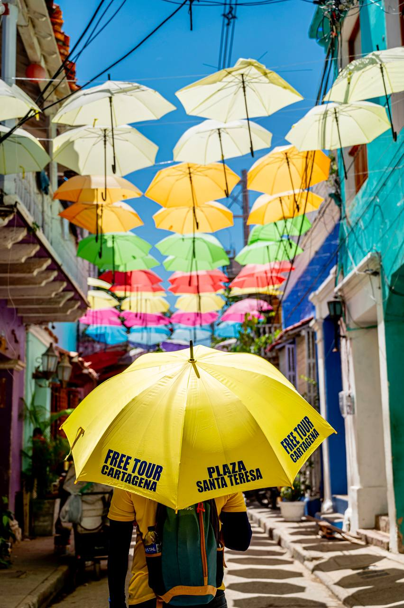

The Getsemaní Street Art & Murals Tour explores Cartagena's most authentic and rebellious neighborhood. Learn the true socio-political stories behind famous murals, umbrella streets (Calle de la Sierpe, Calle de la Magdalena), and Afro-Caribbean pride with local English guides in a 2-hour tip-based walk.
Tour Details & Overview
| Duration | 2 hours |
|---|---|
| Schedule | Daily at 4:00 PM (golden hour) |
| Languages | English & Spanish |
| Meeting Point | Plaza Santa Teresa or Plaza de la Trinidad |
| Price | Free / Tip-based ($30k - $50k COP) |
| Booking | Online confirmation required |
From Rebellion to Global Street Art Capital
Getsemaní was historically home to artisans, dockworkers, and formerly enslaved people who spearheaded Cartagena's independence in 1811. Today, international muralists and local residents have transformed its walls into a living canvas of social resilience, champeta rhythms, and Afro-descendant identity.
Step-by-Step Itinerary
Explore our detailed stops to make the absolute most of your time in Cartagena:
1. Calle de la Sierpe
Home to the famous murals honoring Palenquera women and indigenous roots.
2. Calle de la Magdalena
Canopy of hanging umbrellas and colorful colonial facades.
3. Callejón Angosto
Iconic street adorned with colorful overhead flags and traditional family homes.
4. Plaza de la Trinidad
Heart of the neighborhood where locals gather for street food and evening music.

Map & Meeting Point
Meets at Plaza Santa Teresa with easy crossing into Getsemaní across the Centennial Park.
Ready to Experience the Magic of Cartagena?
Reserve your spot online today with no upfront payment. Guarantee your official yellow umbrella guide and enjoy an unforgettable walk.
Frequently Asked Questions
Is Getsemaní safe for tourists?
Yes, Getsemaní is very popular, lively, and welcoming during day and evening hours.
Are photo opportunities provided?
Plenty! We make dedicated stops at the most photogenic umbrella streets and murals.